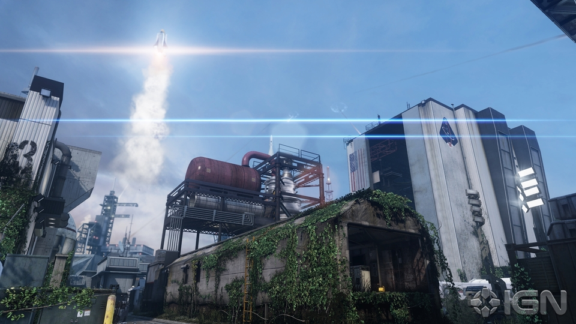
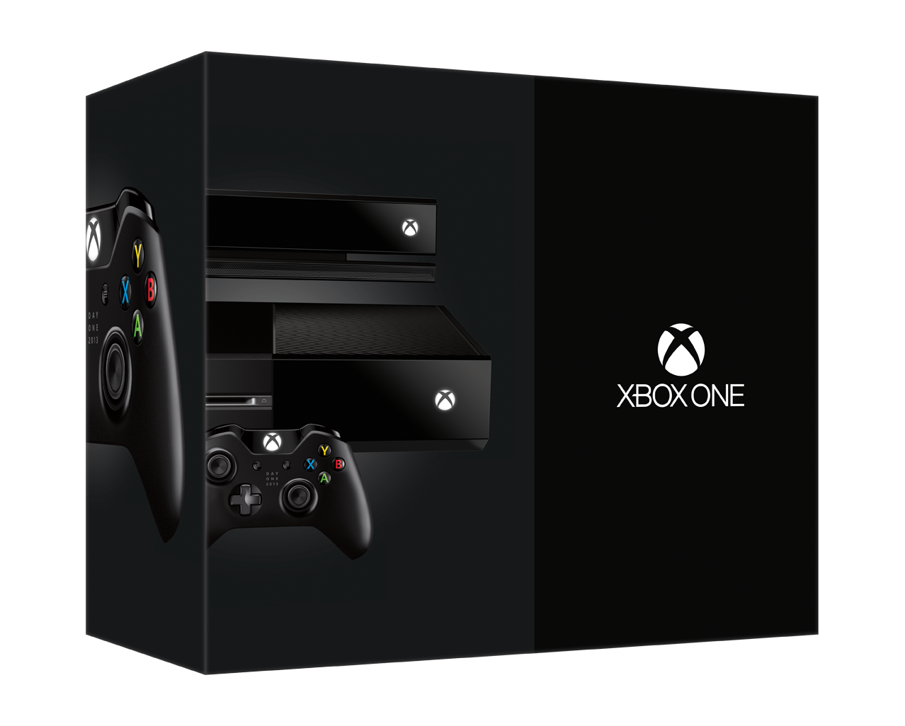
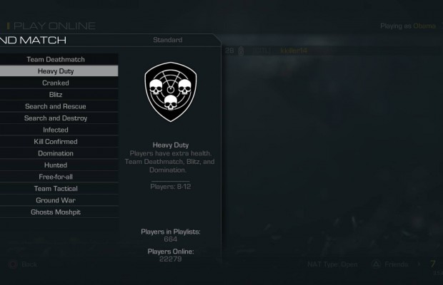

Ghosts Onslaught DLC Release Date

Alongside Fog, the other maps coming have been confirmed as BayView (close-quarters set on a boardwalk with gift stores and an aquarium, along with a functional naval destroyer offshore), Containment (small, set in a war-torn Mexican village, featuring fights over a small bridge and rooftop vantage points), and Ignition (a reimagined version of Scrapyard from Modern Warfare 2 set in a Florida space launch facility).
http://www.ign.com/articles/2014/01/15/call-of-duty-ghosts-onslaught-dlc-release-date
Call of Duty Championship Set for March on Xbox One

Much like last year's Black Ops II event, this Call of Duty: Ghosts competition will see 32 teams competing for $1 million in prize money. Those teams will come together from all around the world: 13 teams from the Americas, 13 teams from Europe, four teams from the Asia Pacific region, and two teams from Africa and the Middle East will comprise the final list of competitors.
http://www.ign.com/articles/2014/01/09/call-of-duty-championship-set-for-march-on-xbox-one
Ghosts Update Adds Heavy Duty Multiplayer Mode

A new multiplayer mode called "Heavy Duty" is now available for Call of Duty: Ghosts. Those who own the FPS on any console (except Wii U) can update their game to get the mode for free. Additionally, the update brings a few bug fixes, balance changes, and other improvements.
http://www.ign.com/articles/2013/12/26/call-of-duty-ghosts-update-adds-heavy-duty-multiplayer-mode-and-fixes